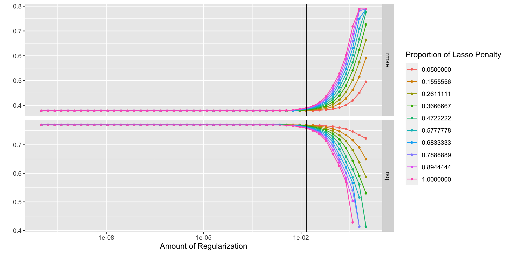

elevators_rec <- recipe(speed_fpm ~ ., data = elevators_train) %>%
step_date(approval_date, lastper_insp_date, keep_original_cols = FALSE) %>%
step_impute_mean(all_numeric_predictors()) %>%
step_novel(all_nominal_predictors()) %>%
step_unknown(all_nominal_predictors()) %>%
step_dummy(all_nominal_predictors()) %>%
step_zv(all_predictors()) %>%
step_normalize(all_numeric_predictors()) %>%
step_corr(all_numeric_predictors(), threshold = 0.9)
lm_spec <- linear_reg() %>%
set_engine("lm")
elevators_wflow <- workflow() %>%
add_model(lm_spec) %>%
add_recipe(elevators_rec)Model Tuning
useR2022
Emil Hvitfelt
Tuning parameters
These are model or preprocessing parameters that are important but cannot be estimated directly form the data.
Some examples:
- Tree depth in decision trees.
- Number of neighbors in a K-nearest neighbor model.
- Activation function (e.g. sigmoidal, ReLu) in neural networks.
- Number of PCA components to retain
- Covariance/correlation matrix structure in mixed models.
- Data distribution in survival models.
- Spline degrees of freedom.
Optimizing tuning parameters
The main approach is to try different values and measure their performance. This can lead us to good values for these parameters.
The main two classes of optimization models are:
- Grid search where a pre-defined set of candidate values are tested.
- Iterative search methods suggest/estimate new values of candidate parameters to evaluate.
Once the value(s) of the parameter(s) are determine, a model can be finalized but fitting the model to the entire training set.
Measuring tuning paramters
We need performance metrics to tell us which candidate values are good and which are not.
Using the test set, or simply re-predicting the training set, are very bad ideas.
Since tuning parameters often control complexity, they can often lead to overfitting.
- This is where the model does very well on the training set but poorly on new data.
Using resampling to estimate performance can help identify parameters that lead to overfitting.
The cost is computational time.
Overfitting with a support vector machine

Choosing tuning parameters
Let’s take our previous model and add a few changes:
Use regularized regression
Let’s take our previous model and add a few changes:
elevators_rec <- recipe(speed_fpm ~ ., data = elevators_train) %>%
step_date(approval_date, lastper_insp_date, keep_original_cols = FALSE) %>%
step_impute_mean(all_numeric_predictors()) %>%
step_novel(all_nominal_predictors()) %>%
step_unknown(all_nominal_predictors()) %>%
step_dummy(all_nominal_predictors()) %>%
step_zv(all_predictors()) %>%
step_normalize(all_numeric_predictors()) %>%
step_corr(all_numeric_predictors(), threshold = 0.9)
lm_spec <- linear_reg() %>%
set_engine("glmnet")
elevators_wflow <- workflow() %>%
add_model(lm_spec) %>%
add_recipe(elevators_rec)Add mode parameters
elevators_rec <- recipe(speed_fpm ~ ., data = elevators_train) %>%
step_date(approval_date, lastper_insp_date, keep_original_cols = FALSE) %>%
step_impute_mean(all_numeric_predictors()) %>%
step_novel(all_nominal_predictors()) %>%
step_unknown(all_nominal_predictors()) %>%
step_dummy(all_nominal_predictors()) %>%
step_zv(all_predictors()) %>%
step_normalize(all_numeric_predictors()) %>%
step_corr(all_numeric_predictors(), threshold = 0.9)
lm_spec <- linear_reg(penalty, mixture) %>%
set_engine("glmnet")
elevators_wflow <- workflow() %>%
add_model(lm_spec) %>%
add_recipe(elevators_rec)Mark them for tuning
elevators_rec <- recipe(speed_fpm ~ ., data = elevators_train) %>%
step_date(approval_date, lastper_insp_date, keep_original_cols = FALSE) %>%
step_impute_mean(all_numeric_predictors()) %>%
step_novel(all_nominal_predictors()) %>%
step_unknown(all_nominal_predictors()) %>%
step_dummy(all_nominal_predictors()) %>%
step_zv(all_predictors()) %>%
step_normalize(all_numeric_predictors()) %>%
step_corr(all_numeric_predictors(), threshold = 0.9)
lm_spec <- linear_reg(penalty = tune(), mixture = tune()) %>%
set_engine("glmnet")
elevators_wflow <- workflow() %>%
add_model(lm_spec) %>%
add_recipe(elevators_rec)Remove unneeded step
elevators_rec <- recipe(speed_fpm ~ ., data = elevators_train) %>%
step_date(approval_date, lastper_insp_date, keep_original_cols = FALSE) %>%
step_impute_mean(all_numeric_predictors()) %>%
step_novel(all_nominal_predictors()) %>%
step_unknown(all_nominal_predictors()) %>%
step_dummy(all_nominal_predictors()) %>%
step_zv(all_predictors()) %>%
step_normalize(all_numeric_predictors())
lm_spec <- linear_reg(penalty = tune(), mixture = tune()) %>%
set_engine("glmnet")
elevators_wflow <- workflow() %>%
add_model(lm_spec) %>%
add_recipe(elevators_rec)Add a spline step (just for demonstration)
elevators_rec <- recipe(speed_fpm ~ ., data = elevators_train) %>%
step_date(approval_date, lastper_insp_date, keep_original_cols = FALSE) %>%
step_impute_mean(all_numeric_predictors()) %>%
step_novel(all_nominal_predictors()) %>%
step_unknown(all_nominal_predictors()) %>%
step_dummy(all_nominal_predictors()) %>%
step_zv(all_predictors()) %>%
step_normalize(all_numeric_predictors()) %>%
step_ns(floor_to, deg_free = tune())
lm_spec <- linear_reg(penalty = tune(), mixture = tune()) %>%
set_engine("glmnet")
elevators_wflow <- workflow() %>%
add_model(lm_spec) %>%
add_recipe(elevators_rec)Grid search
This is the most basic (but very effective) way for tuning models.
tidymodels has pre-defined information on tuning parameters, such as their type, range, transformations, etc.
A grid can be created manually or automatically.
The parameters() function extracts the tuning parameters and the info.
The grid_*() functions can make a grid.
Manual grid - get parameters
This type of object can be updated (e.g. to change the ranges, etc)
Manual grid - create grid
This is a type of space-filling design.
It tends to do much better than random grids and is (usually) more efficient than regular grids.
set.seed(2)
grid <-
elevators_wflow %>%
extract_parameter_set_dials() %>%
grid_latin_hypercube(size = 25)
grid
#> # A tibble: 25 × 2
#> penalty mixture
#> <dbl> <dbl>
#> 1 0.00781 0.271
#> 2 0.752 0.535
#> 3 0.000000404 0.924
#> 4 0.000557 0.299
#> 5 0.0108 0.821
#> 6 0.00000207 0.549
#> 7 0.243 0.210
#> 8 0.0890 0.862
#> 9 0.00204 0.785
#> 10 0.00000667 0.715
#> # … with 15 more rowsThe results
Manual grid - create grid
We will stick to a manual grid since glmnet can calculate multiple penalty values at once
set.seed(2)
grid <-
elevators_wflow %>%
extract_parameter_set_dials() %>%
grid_regular(levels = c(mixture = 10, penalty = 50))
grid
#> # A tibble: 500 × 2
#> penalty mixture
#> <dbl> <dbl>
#> 1 1 e-10 0.05
#> 2 1.60e-10 0.05
#> 3 2.56e-10 0.05
#> 4 4.09e-10 0.05
#> 5 6.55e-10 0.05
#> 6 1.05e- 9 0.05
#> 7 1.68e- 9 0.05
#> 8 2.68e- 9 0.05
#> 9 4.29e- 9 0.05
#> 10 6.87e- 9 0.05
#> # … with 490 more rowsGrid search
The tune_*() functions can be used to tune models.
tune_grid() is pretty representative of their syntax (and is similar to last_fit()):
ctrl <- control_grid(save_pred = TRUE)
set.seed(9)
elevators_res <- tune_grid(
object = elevators_wflow,
resamples = elevators_folds,
grid = grid,
control = ctrl
)
elevators_res
#> # Tuning results
#> # 10-fold cross-validation
#> # A tibble: 10 × 5
#> splits id .metrics .notes .predictions
#> <list> <chr> <list> <list> <list>
#> 1 <split [23652/2629]> Fold01 <tibble [1,000 × 6]> <tibble> <tibble>
#> 2 <split [23653/2628]> Fold02 <tibble [1,000 × 6]> <tibble> <tibble>
#> 3 <split [23653/2628]> Fold03 <tibble [1,000 × 6]> <tibble> <tibble>
#> 4 <split [23653/2628]> Fold04 <tibble [1,000 × 6]> <tibble> <tibble>
#> 5 <split [23653/2628]> Fold05 <tibble [1,000 × 6]> <tibble> <tibble>
#> 6 <split [23653/2628]> Fold06 <tibble [1,000 × 6]> <tibble> <tibble>
#> 7 <split [23653/2628]> Fold07 <tibble [1,000 × 6]> <tibble> <tibble>
#> 8 <split [23653/2628]> Fold08 <tibble [1,000 × 6]> <tibble> <tibble>
#> 9 <split [23653/2628]> Fold09 <tibble [1,000 × 6]> <tibble> <tibble>
#> 10 <split [23653/2628]> Fold10 <tibble [1,000 × 6]> <tibble> <tibble>
#>
#> There were issues with some computations:
#>
#> - Warning(s) x10: A correlation computation is required, but `estimate` is constant...
#>
#> Use `collect_notes(object)` for more information.Grid results

Returning results
collect_metrics(elevators_res)
#> # A tibble: 1,000 × 8
#> penalty mixture .metric .estimator mean n std_err .config
#> <dbl> <dbl> <chr> <chr> <dbl> <int> <dbl> <chr>
#> 1 1 e-10 0.05 rmse standard 0.378 10 0.00408 Preprocessor1_Model0…
#> 2 1 e-10 0.05 rsq standard 0.770 10 0.00488 Preprocessor1_Model0…
#> 3 1.60e-10 0.05 rmse standard 0.378 10 0.00408 Preprocessor1_Model0…
#> 4 1.60e-10 0.05 rsq standard 0.770 10 0.00488 Preprocessor1_Model0…
#> 5 2.56e-10 0.05 rmse standard 0.378 10 0.00408 Preprocessor1_Model0…
#> 6 2.56e-10 0.05 rsq standard 0.770 10 0.00488 Preprocessor1_Model0…
#> 7 4.09e-10 0.05 rmse standard 0.378 10 0.00408 Preprocessor1_Model0…
#> 8 4.09e-10 0.05 rsq standard 0.770 10 0.00488 Preprocessor1_Model0…
#> 9 6.55e-10 0.05 rmse standard 0.378 10 0.00408 Preprocessor1_Model0…
#> 10 6.55e-10 0.05 rsq standard 0.770 10 0.00488 Preprocessor1_Model0…
#> # … with 990 more rowsReturning results
collect_metrics(elevators_res, summarize = FALSE)
#> # A tibble: 10,000 × 7
#> id penalty mixture .metric .estimator .estimate .config
#> <chr> <dbl> <dbl> <chr> <chr> <dbl> <chr>
#> 1 Fold01 0.0000000001 0.05 rmse standard 0.374 Preprocessor1_Model…
#> 2 Fold01 0.0000000001 0.05 rsq standard 0.777 Preprocessor1_Model…
#> 3 Fold02 0.0000000001 0.05 rmse standard 0.399 Preprocessor1_Model…
#> 4 Fold02 0.0000000001 0.05 rsq standard 0.745 Preprocessor1_Model…
#> 5 Fold03 0.0000000001 0.05 rmse standard 0.356 Preprocessor1_Model…
#> 6 Fold03 0.0000000001 0.05 rsq standard 0.795 Preprocessor1_Model…
#> 7 Fold04 0.0000000001 0.05 rmse standard 0.370 Preprocessor1_Model…
#> 8 Fold04 0.0000000001 0.05 rsq standard 0.769 Preprocessor1_Model…
#> 9 Fold05 0.0000000001 0.05 rmse standard 0.381 Preprocessor1_Model…
#> 10 Fold05 0.0000000001 0.05 rsq standard 0.772 Preprocessor1_Model…
#> # … with 9,990 more rowsPicking a parameter combination
You can create a tibble of your own or use one of the tune::select_*() functions:
show_best(elevators_res, metric = "rmse")
#> # A tibble: 5 × 8
#> penalty mixture .metric .estimator mean n std_err .config
#> <dbl> <dbl> <chr> <chr> <dbl> <int> <dbl> <chr>
#> 1 0.000869 1 rmse standard 0.378 10 0.00406 Preprocessor1_Model485
#> 2 0.000869 0.894 rmse standard 0.378 10 0.00406 Preprocessor1_Model435
#> 3 0.00139 0.578 rmse standard 0.378 10 0.00406 Preprocessor1_Model286
#> 4 0.000869 0.789 rmse standard 0.378 10 0.00407 Preprocessor1_Model385
#> 5 0.00139 0.683 rmse standard 0.378 10 0.00405 Preprocessor1_Model336Picking a parameter combination
We can also select a little better, by picking the most simple model whose loss of performance is within some acceptable limit.
smallest_rmse <- select_by_pct_loss(
elevators_res,
metric = "rmse",
desc(penalty),
)
smallest_rmse
#> # A tibble: 1 × 10
#> penalty mixture .metric .estimator mean n std_err .config .best .loss
#> <dbl> <dbl> <chr> <chr> <dbl> <int> <dbl> <chr> <dbl> <dbl>
#> 1 0.0146 0.683 rmse standard 0.385 10 0.00382 Preprocess… 0.378 1.95Picking a parameter combination
Updating the workflow and final fit
elevators_wflow <-
elevators_wflow %>%
finalize_workflow(smallest_rmse)
test_res <-
elevators_wflow %>%
last_fit(split = elevators_split)
test_res
#> # Resampling results
#> # Manual resampling
#> # A tibble: 1 × 6
#> splits id .metrics .notes .predictions .workflow
#> <list> <chr> <list> <list> <list> <list>
#> 1 <split [26281/8761]> train/test spl… <tibble> <tibble> <tibble> <workflow>The workflow, fit using the training set:
Test set results
collect_metrics(test_res)
#> # A tibble: 2 × 4
#> .metric .estimator .estimate .config
#> <chr> <chr> <dbl> <chr>
#> 1 rmse standard 0.379 Preprocessor1_Model1
#> 2 rsq standard 0.775 Preprocessor1_Model1
# Resampling results
show_best(elevators_res, metric = "rmse", n = 1)
#> # A tibble: 1 × 8
#> penalty mixture .metric .estimator mean n std_err .config
#> <dbl> <dbl> <chr> <chr> <dbl> <int> <dbl> <chr>
#> 1 0.000869 1 rmse standard 0.378 10 0.00406 Preprocessor1_Model485Plot performance

Hands-On: Tune hyperparameters
Go to the lab and finish the document by tuning a model